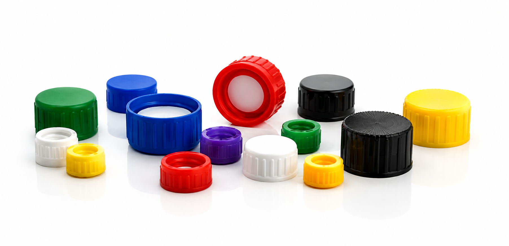

White polypropylene smooth unlined closures available in multiple sizes. Designed for secure sealing and excellent chemical resistance across laboratory and industrial applications.
| Catalog Number | Description | Cap Type | Cap Size |
|---|---|---|---|
| CS-83-13415C | Polypropylene Screw-Top Closures, Clear GPI 13-415 | Clear Polypropylene | 13-415 |
| CS-83-15415 | White Polypropylene Screw-Top Closures, GPI 15-415 | White Polypropylene | 15-415 |
| CS-83-18415C | Polypropylene Screw-Top Closures, Clear GPI 18-415 | Clear Polypropylene | 18-415 |
| CS-P010308 | Plastic Test Tube, PP, 13x100 mm, Capacity 8 mL | Plastic Test Tube | 13x100 mm |